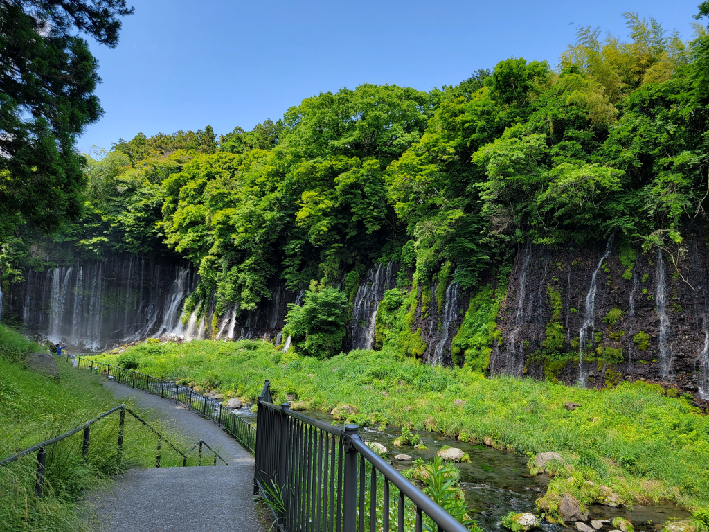
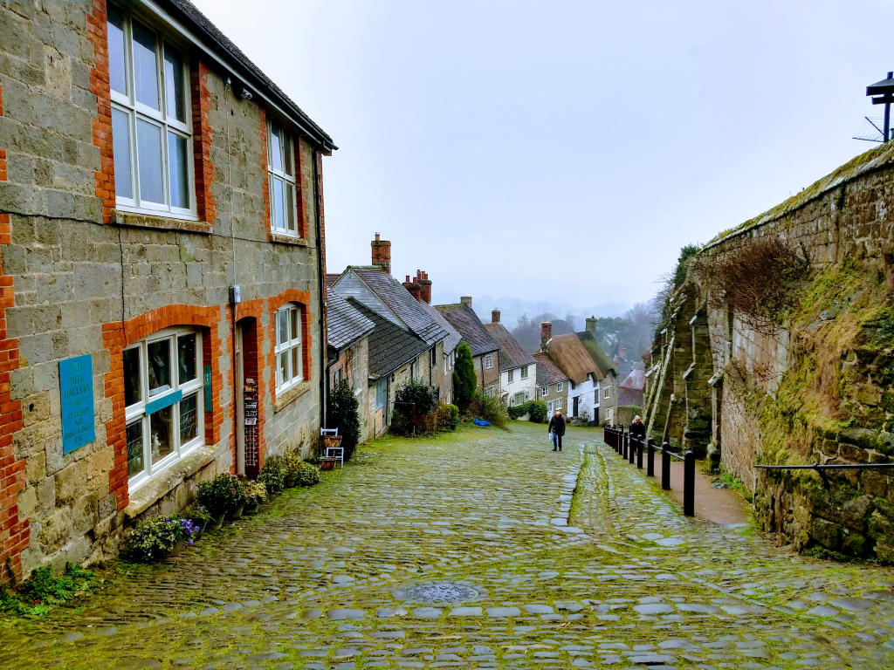

Experience something special! Your plans might not be your ordinary holidays with exclusive cultural events. Want to travel and actually know what it is to celebrate Día de los Muertos in Mexico just like you have seen in the movies? Or visit unique historical place like Stonehenge and London with a Full English breakfast like or maybe enjoy a proper Afternoon Tea Set while staying in England and next day visiting Tower of London or Trafalgar Square. Maybe why not Going to Japan? Why not Sensoji Temple in Tokyo While also going to the Sky Tree in Tokyo. There is always an apatite for sushi or ramen! If any of these places sounds like the to-do in your bucket list that you´ve been wanting to do well we are here to make it true
Our aim is not to just take you on a tour. Our aim is for you connect with the history and culture that you visit. Making this a not only once in a lifetime experience.
Who is this for? Everyone! If you want to try the foods or visit new places this is for you. It does not matter your age what matters is what you want to take home. Wether your are studing or retired, anytime is a great time. Come by yourself or with friends or family!
Each trip has a different experience. While there are so many things you want to take the opportunity while being there, we are here to help with those plans. You don´t need anything special to apply or even ask for information. If you would like to have a tourist guide and make sure you don´t miss out anything important then we can help with that our if you want to free roam and start your own experience of course we can do that too and we will just provide the information to you of best place to eat or visit while you will also have hotels booked. No need to worry This is the place to make it happen!